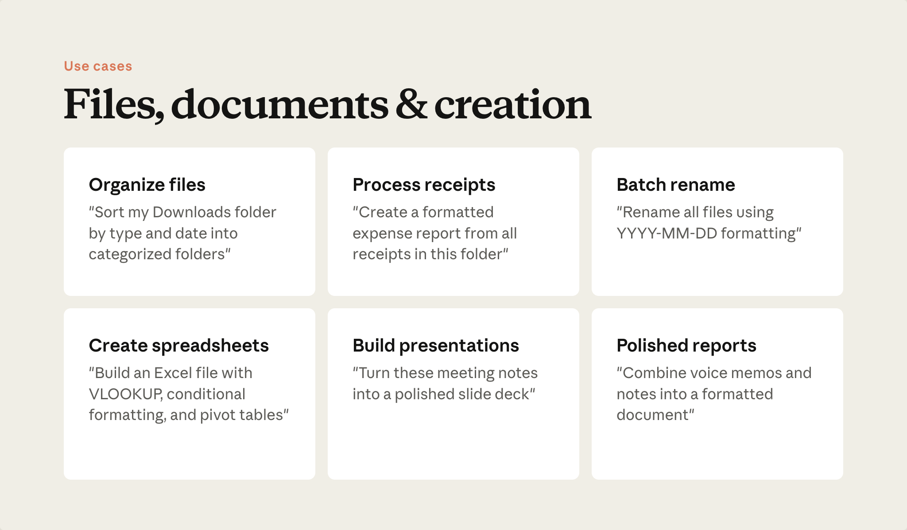

예상 소요 시간: 10분
학습 목표
이 레슨을 마치면 다음을 할 수 있습니다:
- Cowork에 적합한 일반적인 파일 및 문서 작업 인식하기
- 입력, 변환, 출력을 명시하는 프롬프트 작성하기
- 예시 프롬프트를 자신의 작업을 위한 템플릿으로 활용하기
동영상: 파일 작업하기
핵심 내용
- Cowork는 실제 파일을 생성합니다. 편집 가능한 차트가 포함된 프레젠테이션, 작동하는 수식이 있는 스프레드시트, 변경 내용 추적이 적용된 문서 등 파일 자체가 드라이브에 저장되어 바로 열 수 있습니다.
- 출력 결과는 네이티브 형식입니다. Cowork로 만든 덱의 차트는 편집 가능한 차트입니다. 클릭하여 데이터를 조정하고 서식을 변경할 수 있으며, 직접 만든 것과 동일합니다.
- 템플릿과 브랜드 규칙이 누적됩니다. 브랜드 가이드라인 스킬(레슨 6)을 한 번 만들어 두면, Cowork가 생성하는 모든 파일에서 이를 참조할 수 있습니다.
먼저 활용할 작업들

이 프롬프트들은 좋은 출발점입니다. 패턴을 살펴보세요: 각각 입력, 변환, 출력을 명시하고 있습니다.
보유한 것 정리하기
"내 다운로드 폴더를 파일 유형별로 날짜 하위 폴더에 정렬해 줘."
"이 폴더의 모든 파일을 날짜 우선 형식으로 일관되게 이름 변경해 줘."
"이 폴더의 영수증으로 서식이 갖춰진 지출 보고서를 만들어 줘."
필요한 것 만들기
"이 메모를 바탕으로 상태 열과 요약 보기가 있는 프로젝트 추적 스프레드시트를 만들어 줘."
"이 회의 메모를 슬라이드 덱으로 변환해 줘. 브랜드 가이드라인 스킬을 사용해."
"이 폴더의 녹취록과 메모를 서식이 갖춰진 보고서로 합쳐 줘."
프롬프트 패턴
- 입력 — 원본 자료가 있는 곳. "내 다운로드 폴더", "이 회의 메모", "이 폴더"
- 변환 — 무엇을 할지. "유형별로 정렬", "슬라이드 덱으로 변환", "합쳐서"
- 출력 — 어떤 형식으로 만들지. "날짜별 하위 폴더", "요약 보기가 있는 스프레드시트", "서식이 갖춰진 보고서"
"내 파일 정리해 줘"에는 이 요소들이 하나도 없습니다. "내 다운로드를 파일 유형별로 날짜 하위 폴더에 정렬해 줘"에는 세 가지가 모두 있습니다. 전자는 확인 질문을 받게 되고, 후자는 바로 작업이 진행됩니다.
직접 실습해 보기
위의 프롬프트 중 하나를 선택하세요. 세부 내용을 자신의 것으로 바꿔 보세요: 자신의 폴더, 파일 유형, 출력 형식으로. 실행해 보세요.
더 많은 작업 아이디어는 Cowork 활용 사례 갤러리 를 참고하세요.
다음 단계
다음으로, Cowork가 일반 채팅으로는 하기 어려운 일을 해내는 영역을 살펴봅니다: 채팅 창에서 다루기 힘든 규모의 리서치와 분석입니다.
피드백
피드백을 여기 에서 공유해 주세요.
저작권 및 라이선스
Copyright 2026 Anthropic. All rights reserved.